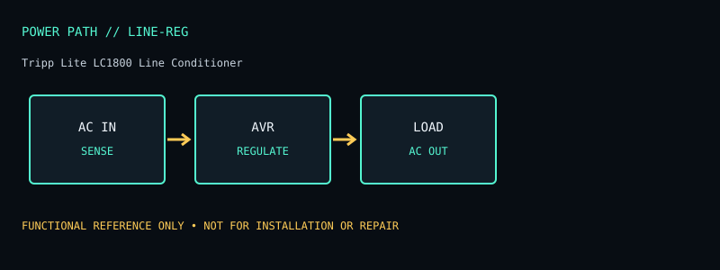

[ LINE CONDITIONERS // MODEL RECORD ]
Tripp Lite LC1800 Line Conditioner
120 V automatic voltage regulation/line conditioner rated for 1800 W with six outlets. The specifications below are for this named model and region only; verify the complete product label and matching manual before deployment or service.

ARCHIVAL IDENTIFICATION: Preserve the complete SKU, suffix, region, date code, revision, installed battery part (if present), firmware and physical condition. Similar model names do not establish hardware equivalence.
Specifications, conditions & service
| Catalog subcategory | Line conditioners |
|---|---|
| Topology / power path | Automatic voltage regulation and surge suppression condition supported sags/swells; no battery inverter or outage transfer. |
| Ratings / output configuration | 120 V, 1800 W maximum; six NEMA 5-15R outlets on LC1800 configuration. Actual operation remains limited by input circuit and manual’s load restrictions. Six NEMA 5-15R outlets. |
| Battery / replaceability | No battery. |
| Runtime / limits and conditions | No runtime; it cannot support a load during a blackout. |
| Interfaces / monitoring | Front-panel status indicators; no computer shutdown/network interface or energy monitor. |
| Safety / installation caveats | Does not correct all power-quality problems or replace proper grounding. Do not exceed 1800 W or branch-circuit limits; do not daisy-chain. Follow ventilation and manufacturer placement/safety instructions. |
| Model variants / revision checks | LC1800 differs from LC1200 and LC2400 in capacity and outlet/rating details. Confirm exact SKU and label. |
Field service / archive notes
- Record labels and connector layout before installation; document load, input conditions, measured behavior and test date separately from manufacturer-rated values.
- Never open energized mains equipment. Battery devices can retain dangerous voltage or high fault current; follow the manufacturer’s replacement and recycling procedure.
- Inspect enclosure, cord, plugs, grounding, indicators, alarms and battery condition. Quarantine damaged, swollen, leaking or heat-affected equipment.
- Network-management appliances should be isolated, updated where supported and configured with non-default credentials; do not expose legacy management interfaces directly to the public internet.
Manufacturer references
- Manufacturer product listing — Tripp Lite LC1800 Line ConditionerModel identity and product-family specification reference. Confirm exact regional SKU against the chassis label.
- Manufacturer manual / support documentationConsult the version matching the exact SKU. Runtime references are load- and condition-dependent estimates where supplied, never a guarantee for a particular aged unit.